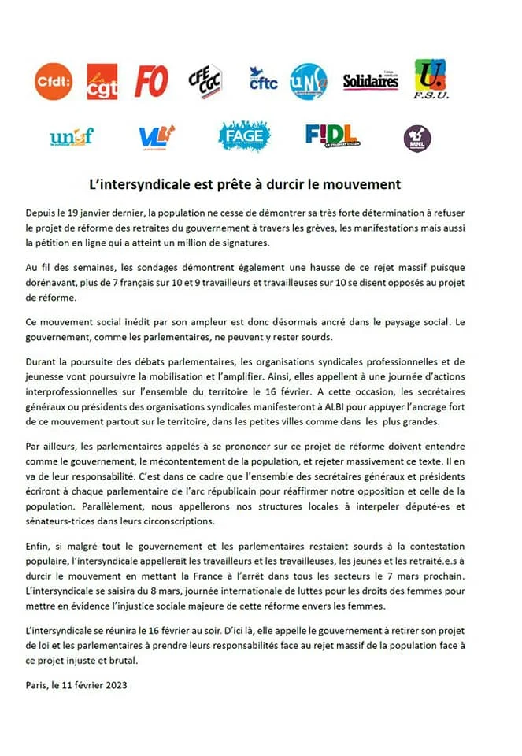

Compte rendu fédéral
À Niort, la mobilisation du 11 février contre la réforme des retraites
Date indiquée par Facebook · 13 février 2023
Repères éditoriaux
Nous avons défilé contre la réforme. Les photographies de Niort et le partage vidéo de Bressuire documentent deux rassemblements du même jour.
Texte conservé avec la publication
Mobilisation puissante à Niort le 11 février pour dire NON à cette réforme injuste des retraites. On se retrouve le jeudi 16 février puis ... jusqu'au retrait.
La retraite ne doit plus être l’antichambre de la mort mais une nouvelle étape de la vie. », disait Ambroise Croizat ministre du travail, communiste, père fondateur de la sécurité sociale et des retraites.

Sources
Archive rouge · export Facebook · AR-0002-FB-01756
À lire aussi · Contre cette réforme des retraites de Macron, la manifestation du 11 février à Bressuire.